2019
An impossible love story between a zombie boy and a human girl.

Best Storytelling at SXSW · Cristal at Annecy · six awards in all

2021
A blind boy who can hear the spirits of music.




EMMY nominee · five more festivals, from Cannes XR to Annecy

2026
Mixed-reality multiplayer — 3D eggs loose in your own room.

Awarded at Venice Immersive · Gamechangers 2024 · Most Innovative 2023

2026
We landed here.

We have never been
so connected
and so alone.

Why does being
alone frighten us
so much?

If there is so much
to learn from it…

Opi is the shape
loneliness takes.
It only exists when someone is left alone — and it visits every kind of solitude to work out why.

Visiting solitudes,
in a 30-minute journey through silence.

“In their absence.”
The solitude that arrives without asking. Opi doesn't know what he came for yet — only that the void never fills, and that sometimes staying is enough.

“Sometimes we feel most alone
in the middle of a crowd.”
He goes looking for the opposite of Simón: someone alone in the middle of everyone.

This is not her prison.
It is her home.
The first blow to his logic: some solitudes are not there to be cured. She does not need him. He steps back.

“Some run from others
just to find quiet…”
If Zulma's solitude was chosen, he wants to understand the one you choose on purpose.

“…and end up lost in it.”
Unanswered messages become a maze, and then a lake. Solitude never announces the day it stopped being a shelter.

“Sometimes routine
feels like safety…”
He goes looking for someone who has been lost in that maze for years. Lucy, twenty years from now.

“…until you notice
it never ends.”
Where that maze leads if nobody interrupts. Watching is no longer enough.

Turning point
Loneliness did not come
to punish anyone.
It came to teach them something.
Four faces of the same silence, and Opi finally understands what he is for: he is the time it takes for them to listen. He stops watching. He starts acting.

“At night, thoughts behave
slightly differently.”
He lifts Luis out through the roof of his own car, holds him in the wind — and lets him drop. Waking someone with a jolt is all that is left when they fell asleep inside their own life.

A swing that nobody pushes.
He goes back to the boy. Simón takes one step towards him, and the gesture opens a world: colour floods a place that was built in grey.

For the first time,
someone runs towards him.
Inside the boy's imagination Opi discovers what he can do: that a solitude can mean something, that it can push someone forward.

“Where silences meet.”
He crosses the two solitudes he had been studying: the one Lucy chose, and the one Luis stopped noticing.

No words. The silence
between them grew smaller.
Opi moves away in search of a safer solitude — the first time he leaves because he decided to, and not because he was no longer needed.

“Everyone leaves,
sooner or later…”
The last door. Seraphine, alone on her birthday with one lit candle. Opi watches from the window, ready to stay with her all night.

“…except the ones
who love you.”
Simón — the boy from the very first solitude — walks in and holds her without a word. What Opi did for him, he does for her. His light goes out on the other side of the glass.

“Opi stands where you stand,
reflecting the side of you
no one sees.”
He will come back. There is always someone being left alone. Maybe you.

VR is solitary
by nature.
We use that
as the reason.

If this were a feature

- I
- II
- III

Prototype-ready.
- NarrativeTreatment written, synopsis locked
- Art directionValidated — everything you just saw
- Phase 1Two playable scenes · script V1
- BuildUnreal · standalone VR · single player · ~30 min

Looking for the
right partners.
- Co-productionAn international partner to build Phase 1 with us
- FinancingPrototype through to the full 30 minutes
- DistributionFestival premiere, then location-based venues
- The IPFeature, series, installation, toys — the road we already walked with Gloomy Eyes

No loneliness is
ever entirely alone.
Thanks.